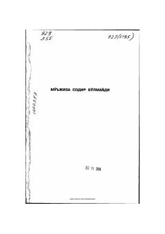

MSJanubiy Koreya sobiq prezidentining muvaffaqiyatga erishish yo'lidagi mashaqqatli hayotiy tajribalari.
Janubiy Koreyaning sobiq prezidenti Li Myon Bakning ushbu avtobiografik asari uning kambag'allikdan davlat rahbarligigacha bo'lgan mashaqqatli hayot yo'lini hikoya qiladi. Muallif muvaffaqiyat tasodifiy mo'jiza emas, balki tinimsiz mehnat, qat'iyat va sabr-toqat mahsuli ekanligini o'z tajribasi misolida tushuntiradi.